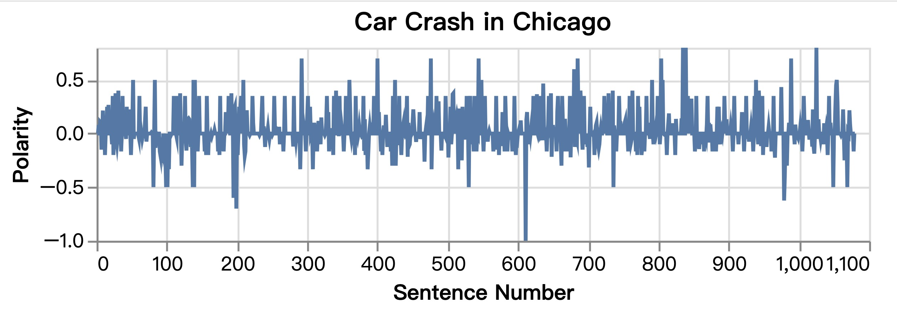

30538 Final Project: Reproducible Research
1. Introduction
Research Question: What are the most significant factors contributing to traffic crashes in Chicago?
Data: We use crashes and people data from Chicago Data Portal in the year 2013-2024, and use crashes data from Open Data DC in the year 1899-2024. Moreover, we extract text data by web-scraping from Chicago and DC news websites respectively. Please download all of our datasets (including both initial, unmodified dataframes we download and the final versions of the dataframes) in this link.
Motivation: Traffic crashes are a persistent issue in urban environments, posing risks to public safety and city infrastructure. By comparing monthly crash counts per-capita in Chicago with those in Washington, D.C, we find more undesirable traffic crash performance in Chicago. This analysis investigates the factors contributing to traffic crashes in Chicago. Using a combination of time series data, demographic indicators, Shiny App, and text analysis, the study aims to identify patterns and propose actionable recommendations to reduce traffic accidents.
Approach: The research combines multiple datasets, including crash details, drivers’ information, primary causes and demographic data. We did two merges. The first merge is for Chicago and D.C. crash datasets by date. The second merge for Chicago crash data wth people involved in crashes was analyzed for insights on age, gender, and contributory behaviors. We focus the past five years data of Chicago crashes for plotting, while including all years for Shiny App presentation. We also conducted the text analysis from 200 news articles to provide context for public sentiment.
Difficulties: Challenges include managing large amount of indeterminate crash categories and missing data. For example, if we have missing data in latitude or longitude columns, we won’t be able to use the observation for geo-map plotting at all.
2. Cross-city Comparison between Chicago and Washington D.C.
Time Series: We have two takeawyas here: (1) Chicago has higher monthly crash counts per capita over the past five years in contrast with D.C.. (2) Both Chicago and D.C. display seasonal pattern, with most crashes happening during summer season.
Text Analysis: News articles of Chicago display lower polarity and subjectivity based on the past 100 news articles.

Overall, Chicago shows a more undesirable crash performance comapred to DC on per-capita level. It indicates the significance of evaluating the causations and potential improvements for Chicago.
3. Deep Dive into Chicago
Time Patterns Summary: Our analysis of the data reveals that traffic crashes in Chicago are most frequent during October, July, and June, with the highest risk occurring on weekends (Friday through Sunday) and during late afternoon hours (3 PM to 5 PM).
Gender & Age Indicators: Male drivers and young adult drivers aged 18–40 are disproportionately involved in crashes, underscoring a demographic risk group. From the data, we also find that there were even young drivers who were in age range between 6-12 years old involved in the crash.
Primary Contributory Causations: (1) Major causes include failing to yield right-of-way and following too closely. (2) Other critical issues include disregarding traffic signals and improper driving actions, such as incorrect turning and lane usage.
Average Injury Rates by Type & Surface Condition: (1) Three main causations of injuries are Motorcycle advancing legally on red light, Disregarding traffic signals, and Disregarding other traffic signals. (2) For roadway surface condition, in addition to dry surface condition, wet and icy roadway surfaces were associated with relative higher injury rate in crashes.
4. Shiny App
For our Shiny App, we streamlined over 40 primary causations into 10 broader categories to create a more user-friendly interface. A dropdown menu allows users to select all 10 causes or focus on a specific one. Additionally, a timeline slider filters data by year (2013–2024), and a toggle button lets users choose between a single year or a range of years.
When a range of years is selected, the app displays two plots: a geo-map on the left and a line chart on the right. The left panel features a geo-map showing traffic crash distributions within Chicago, where each dot represents a crash location, with size and color indicating crash density. When all causes are selected, most crashes are concentrated in downtown Chicago. The right panel shows a line chart tracking crash trends over the selected period, helping users identify patterns and changes in crash counts across categories.
If a single year is selected, only the geo-map is displayed, as there is no time range for comparison, and the time-series graph automatically disappears, as there’s no time range to compare.
5. Conclusion with Policy Recommendations & Future Research Directions
Key Insights: (1) Peak Seasons and Times: Traffic crashes are more frequent during late afternoons and weekends. (2) Top Crash Contributors: unsafe and aggressive driving, incorrect driving actions (i.e., improper turning/no signal, improper lane use), and failure to yield right-of-way
Policy Recommendations: (1) Implement targeted traffic control and guidance during peak crash times and high-risk locations. (2) Strengthen enforcement of aggressive driving and right-of-way laws with higher fines and immediate ticketing. (3) Promote public awareness through radio programs and social campaigns Adding crosswalks, bike lanes, motorcycle lanes, and signals at high-crash areas. (4) Prioritize road maintenance, provide real-time traffic updates (with radios) and guidance for hazardous conditions. (5) Enforce stricter age restrictions to prevent underage driving
Future Research Directions: (1) Investigate Speeding: Use more comprehensive and updated data sources to conduct further research on the role of speeding in traffic crashes. (2) Impact of Fines and Enforcement: Examine how different levels of fines and enforcement impact traffic safety and driver behavior.
Note: Our detailed codes are provided below.
```{.python include=“shiny-app/basic-app/app.py”}